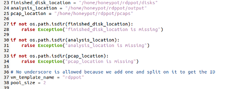
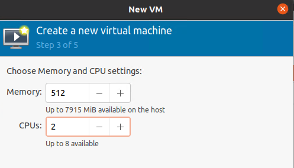
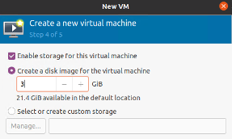

How to setup rdppot
An except from my dissertation around deploying rdppot
23/08/2022
rdppot, by Kryptos Logic, is an open source RDP honeypot that deploys a pool of Windows XP honeypots from a base image. This article will outline how I setup this script for my dissertation. I hope it will be of use to anyone trying to get this setup.
An important prerequisite of this script is a Windows XP Pro .iso file. I will not provide a link for this, it is up to you to obtain this.
DISCLAIMER
Is this best practice for setting up a honeypot? No. I would NOT recommend running this script outside of a secure, virtualized environment. In this form, it is also detectable as a honeypot, as I outlined in my dissertation. I am not responsible for you using this guide to deploy an insecure honeypot and getting yourself into trouble.
1. Install prerequisite software required
sudo apt install net-tools git python3 python3-pip qemu qemu-kvm libvirt-daemon-system libvirt-dev vim virt-manager bridge-utils
2. Clone the github repo
git clone https://github.com/kryptoslogic/rdppot
3. Move into the new directory and install required python libraries as sudo
cd rdppot && sudo pip install -r requirements.txt, recordclass, pip3 install git+git://github.com/tkuebler/pyping
4. Downgrade ‘aiorwlock’ python library to version 1.0.0 to fix incompatibility issues.
sudo pip3 install --upgrade aiorwlock==1.0.0
5. Modify the ‘main.py’ file in lines 23-25 to reflect the correct path, in this case ‘/home/honeypot/rdppot’. This will look different for you depending on the name of the user you are currently logged in as.

6. Modify the pool size in line 38 to whatever you desire. Whatever number you set this to will be the number of instances spun up. I've set it to 2 for the sake of this demo.
7. Open virt-manager (you can do this by typing 'virt-manager' into the console/terminal) and create a new virtual machine with a Windows XP ISO, 512mb of RAM, 2 CPU cores and 3GB hard disk space.


8. Name the virtual machine 'winxp_template'
9. Change the network adapter of 'winxp_template' to 'virtio'
10. Boot the BM and install the virtio drivers. Use this video at the 16:30 mark to guide you.
11. Create a password for the admin account
12. Enable RDP by following these steps.
13. Enable auto login to allow the VMs to start up properly on their own. Follow this article to help.
14. Deploy the honeypot by running the below command
sudo python3 main.py